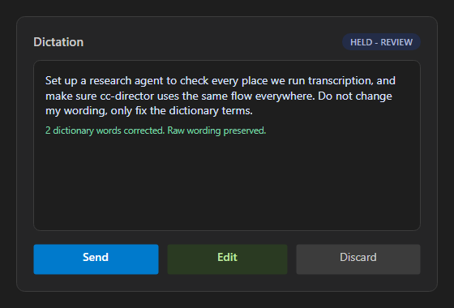
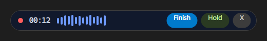

DevThrottle / cc-director - CenCon Developer Agent proof
Issue #588 - Shared transcription UI component (full + small), no partial preview
Branch issue-588-shared-transcription-component | built on main after foundations #586 and #587
CcDirector.Avalonia.Controls.TranscriptionComponent, with two size variants
(Full and Small) that render the same lifecycle states
(idle -> recording -> transcribing -> review | used | error) and the same
Finish / Hold / Cancel controls. It is presentation and state only - it captures no audio and
runs no transcription. The host drives it through the public
ShowIdle / ShowRecording / ShowTranscribing / ShowReview / ShowUsed / ShowError,
UpdateTimer, UpdateLevels, and SetMicrophones methods and
reacts to the output-contract events Finished(text), Held(text),
Cancelled(), and Errored(reason) (the spec's
OnFinished / OnHeld / OnCancelled / OnError). There is deliberately no method to push partial
transcript text in - the no-live-preview rule is enforced by the absence of that path.
Changes
src/CcDirector.Avalonia/Controls/TranscriptionComponent.axaml(.cs)- the new shared control: two variants, six states, the four output events, microphone selection on the full variant only, a live waveform + timer in the recording state with no transcript text, and a dictionary-correction count in the review state.src/CcDirector.Avalonia/Controls/TranscriptionComponentPreviewDialog.axaml(.cs)- a developer preview harness that hosts both variants and lets a developer or QA flip through every state in the running app. Reached from the alpha-gated Tools -> Transcription Component Preview... menu entry.src/CcDirector.Avalonia/MainWindow.axaml.cs- one menu item (alpha Tools) opening the preview dialog. No existing surface is rewired (that is the per-place issues).docs/cencon/architecture_manifest.yaml- added theTranscriptionComponententry to thedesktop_uicontainer (CenCon architecture update).playground/transcription-component-harness/- a manual headless+Skia render harness (not in the solution) that instantiates the REAL control in each variant/state and captures the proof PNGs below.
How this was proven
The screenshots below are rendered from the REAL shipping control
(CcDirector.Avalonia.Controls.TranscriptionComponent) by the headless+Skia render
harness, the same proven pattern used by playground/wingman-render-harness. The
harness references the production project and renders the actual control off-screen, so the images
are of the genuine component, not a replica. The component was also exercised live in a running
Director (slot 14, launched via its own scheduled task) through the alpha-gated
Tools -> Transcription Component Preview... menu entry; the shared config.json
was restored to its original alpha_mode value afterwards.
The full solution builds clean: dotnet build cc-director.sln -> Build succeeded. 0 Warning(s) 0 Error(s).
Acceptance criteria - expected vs actual
| Criterion | Expected | Actual (proof) | |
|---|---|---|---|
| Shared component, full + small, same states + Finish/Hold/Cancel | Both variants render the same states and the same controls. | One control with a Variant property; both variants render across all six states (see all figures). |
PASS |
| Recording shows waveform + timer, no transcript text | Waveform and timer visible; transcript area shows only a placeholder, never typed text. | full-recording.png and small-recording.png show the timer + waveform; the full transcript area shows only the placeholder watermark. | PASS |
| Transcript only after transcribing; no live partial path | No public method accepts partial text; text appears only after transcribing. | The control has no partial-text input method; text is set only by ShowReview/ShowUsed. Transcribing shows no text (full-transcribing.png), review shows the final text (full-review.png). |
PASS |
| Review (Hold) shows final text + correction count, Send/Edit/Discard; Finish raises OnFinished without review | Review state shows the text + count and three actions; Finish uses the text without review. | full-review.png shows the text, "2 dictionary words corrected. Raw wording preserved.", and Send/Edit/Discard. In code, the Finish button raises Finished(text) directly with no review step. |
PASS |
| Error state shows a named reason and offers retry | Named reason + Retry. | full-error.png shows "Microphone not available" with Retry + Cancel. | PASS |
Proof target - the named screenshots






CenCon impact
Architecture changed: a new shared Avalonia control was added. The
TranscriptionComponent entry was added to the desktop_ui container in
docs/cencon/architecture_manifest.yaml in this same change. No security posture
change - the control performs no I/O, network, secret handling, or audio capture (presentation and
state only), so security_profile.yaml is untouched.